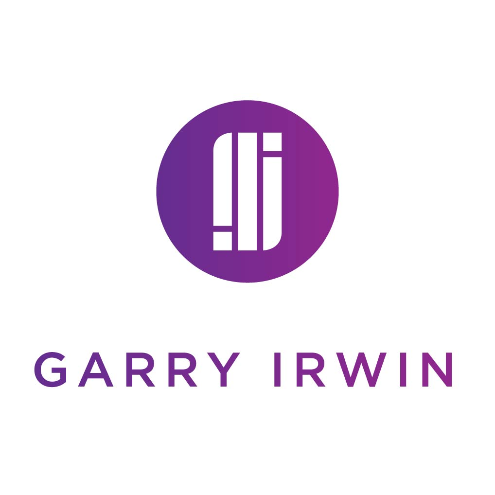
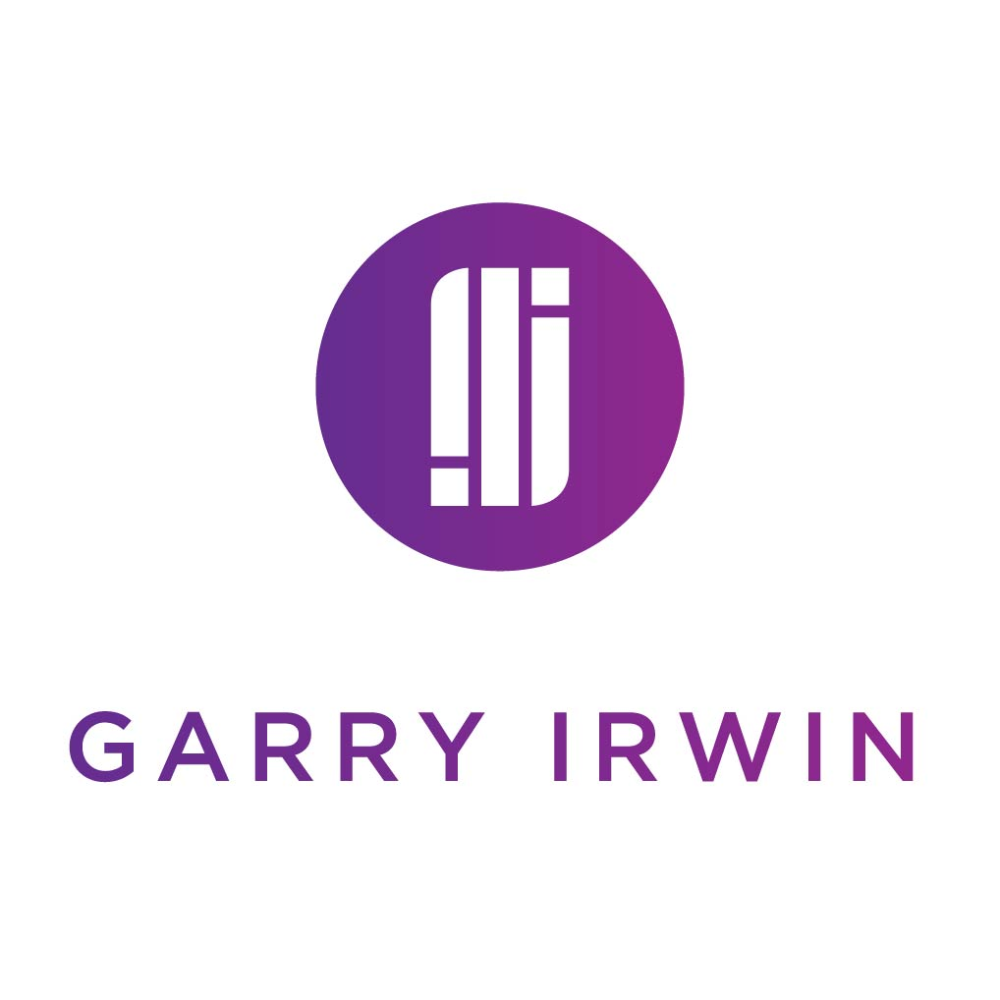

About
How do designers design for themselves? I was in desperate need of some personal branding to help market myself, so this project was undertaken to see what I could come up with without any stipulations. I needed to come up with a monogram, visual marque, wordmark and some brand guidelines. I also made some visual extensions like phone wallpapers for fun.
I always start new projects on paper, getting as many ideas out of my head as possible plus there's no ramifications for messing up on paper. In software, I experimented with layouts, typefaces and well... pretty much everything until I came up with something I was happy with. Maybe it's time for a refresh though?...


 
